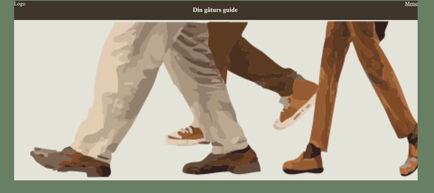

TEMA 5
Tema 5 var delt op i to projekter; et sandkasse-site og et virksomhedssite. Sandkasse-sitet var et passion-site og var et individuelt projekt og virksomhedssitet var et gruppe projektet, der gik ud på at redesigne et allerede eksisterende
site.
Her var der til formål at give os færdigheder i indførelsen af indholdsproduktion, herunder præproduktion, selve produktionen og postproduktion. Her fik vi også færdigheder i fotografering med smartphones og udviklingen af animeret
vektorgrafik: LottieFiles.
Her kan du læse om nogle læringer jeg har fremhævet fra tema 5.
Lottiefile
I første del af tema 5 (sandkasse-site) lærte vi at lave en Lottiefile i Adobe After Effects. En Lottie er et JSON-baseret animationsfilformat, der giver mulighed for at eksportere animationer på en platform. Jeg lavede en Lottiefile i min hero-sektion, som ser ud som følgende:
For at lave den her Lottiefile, startede det hele med illustrationen. Illustrationen består af 3 forskellige billeder som jeg har sammensat i Adobe Illustrator og fået konverteret billedet fra pixels til vektor, ved hjælp af Image Trace. Derefter satte jeg illustrationen i Adobe After Effects, og fik illustrationen til at bevæge sig ved brug af compositions.
Redesign af eksisterende webiste og billedetagning
I tema 5 Virksomhedssite, lærte vi nye metoder til research og redesign af et eksisterende website. F.eks. At lave sitemap på eksisterende og redesignede website, at lave interviews, billedtagning mm.
I vores gruppe lavede vi to forskellige interviews - det første var et telefon interview og det andet interview var et fysisk interview hvor vi også tog billeder som vi indførte på vores redesignede site. Billedtagning processen havde vi
planlagt inden vores besøg, på følgende måde:
Det gjorde vores proces meget nemmere, at vi på forhånd havde planlagt hvilke billeder der skulle tages, og at vi havde reference billeder for, at have et visuelt element på det også.
Fordi vi ikke havde besøgt stedet før og ikke havde bekendtskab til det, var der nogle af billederne der ikke var mulige for os at udføre - men overordnet var forberedelsen til billedetagningen en hjælp.